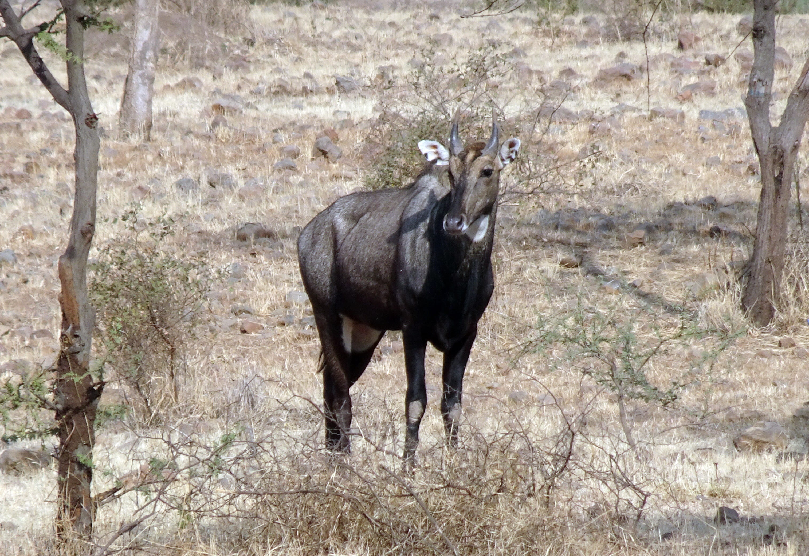
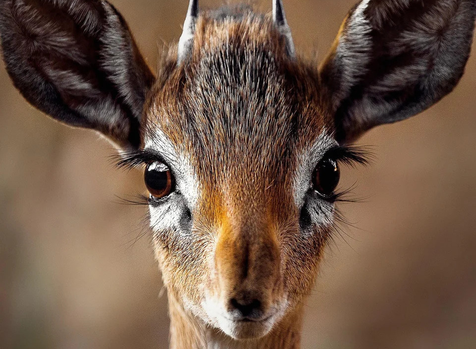
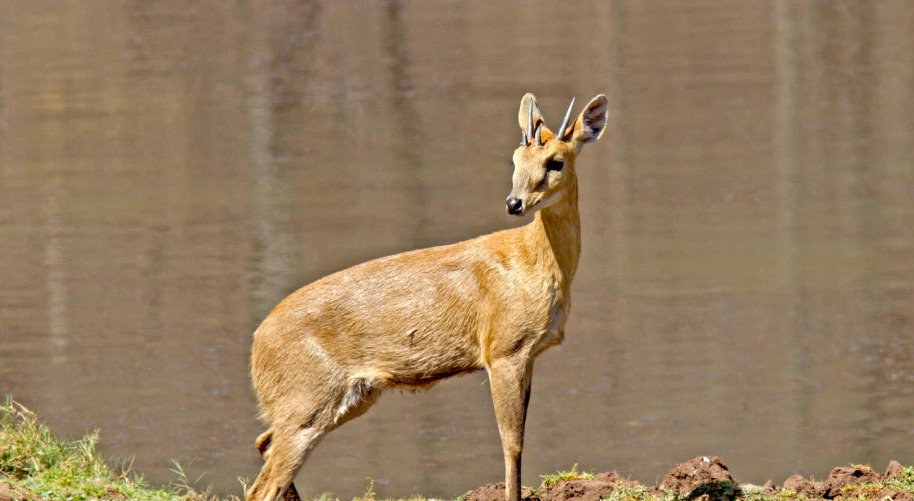
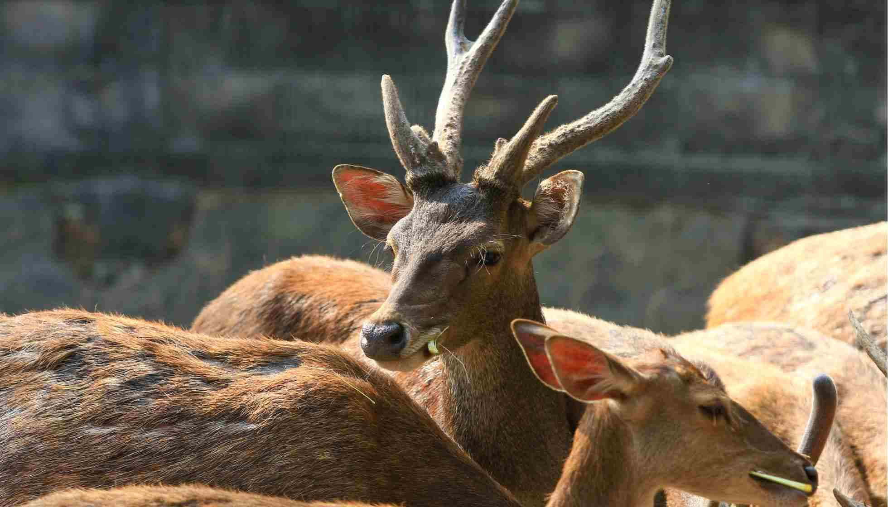
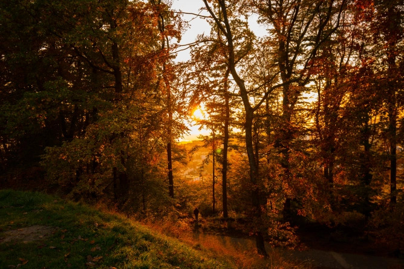
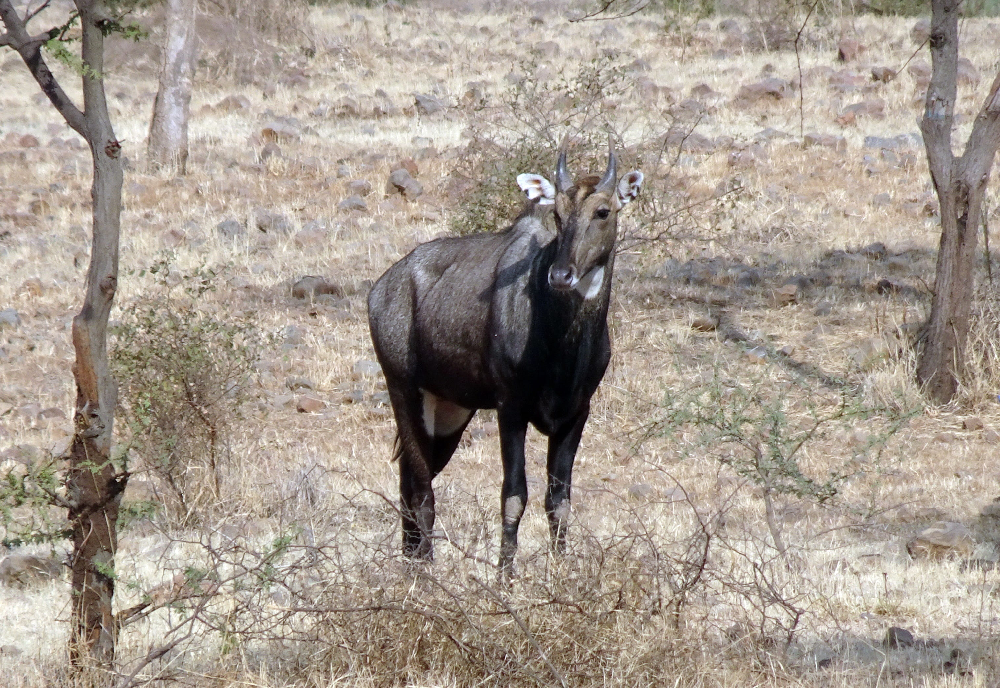
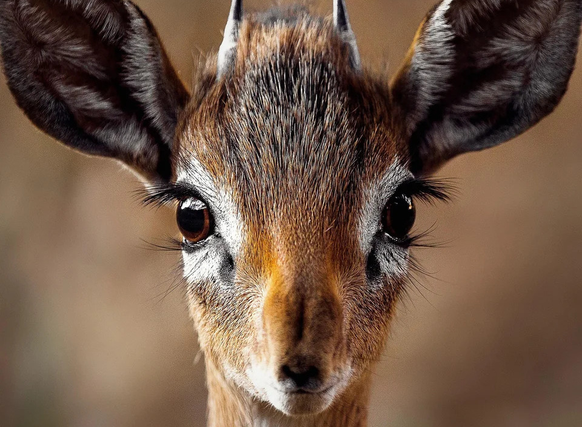
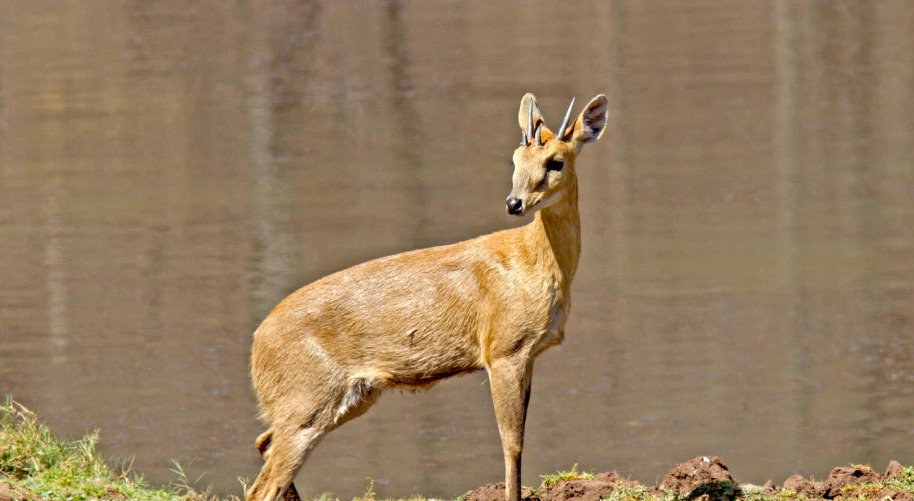
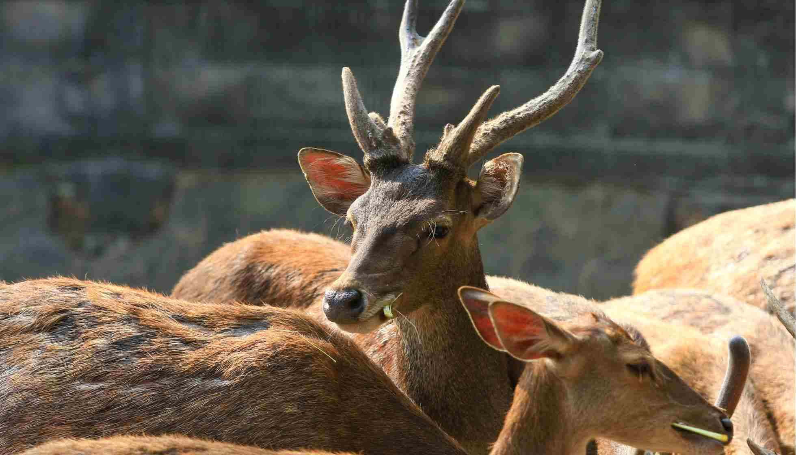
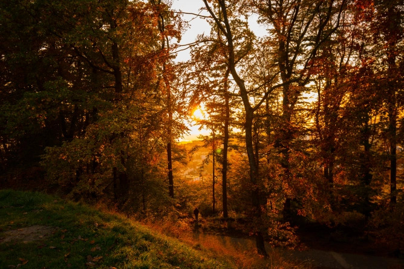

General Information
The foot of the Katepurna Sanctuary is set on the lands of the Akola district in the Vidharba region of Maharashtra. The catchment of the Katepurna reservoir holds the Katepurna Sanctuary in its proximity. This is one of the popular wildlife sanctuaries in Maharashtra.
Once you enter the sanctuary you can see grasslands that are been developed by Forest department. Also there are chances that you may see Cheetal and Barking Deer. Also its said that if you are lucky enough then you can also sight a Leopard.
Biodiversity
Flora
There are over 115 species of plants at this sanctuary such as Bahada, Dhawada, Moha, Tendu, Khair, Salai, Aola, Teude, etc.
Fauna
Katepurna Wildlife Sanctuary is renowned for the four-horned antelope and barking deer. Other animals that you can see at the sanctuary include black buck, leopard, wolf, wild boar, hyena, hare, nilgai, jungle cat and monkey. Among the birds, Peafowl is the common bird spotted by tourists. You can also view several species of common grassland and wetland birds here. The Katepurna water reservoir attracts many water birds.
 








